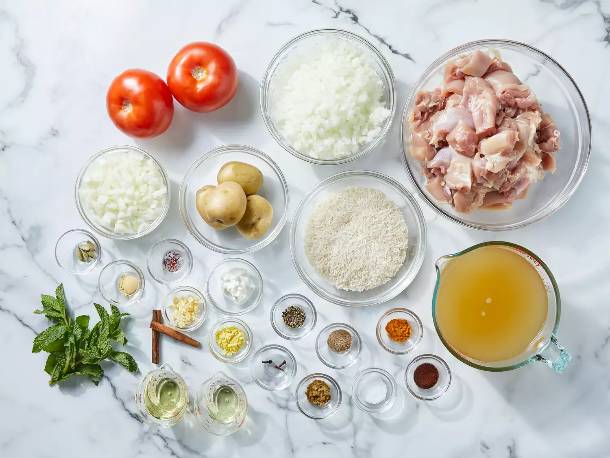
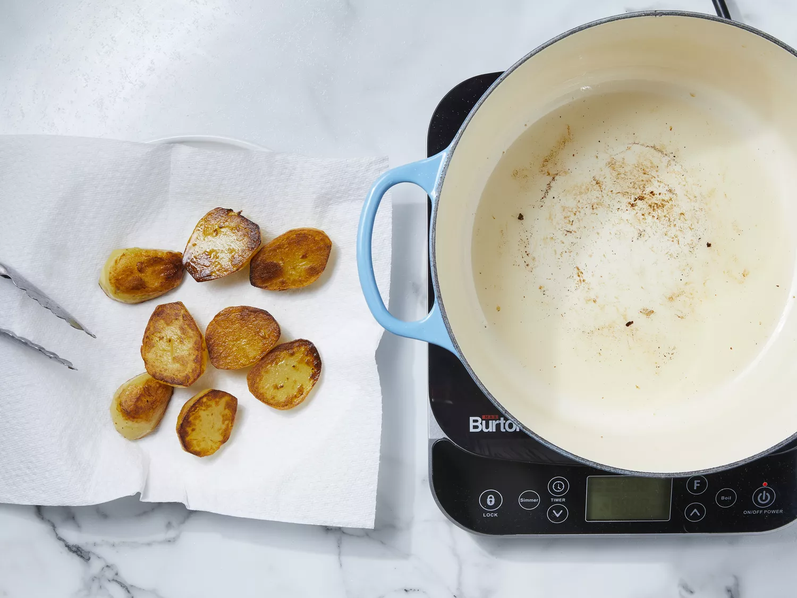
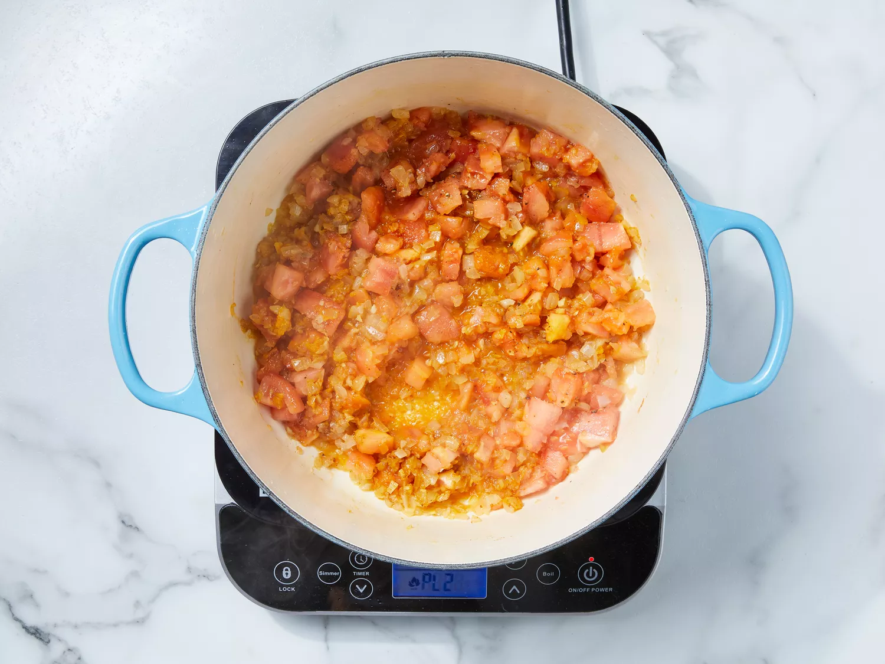
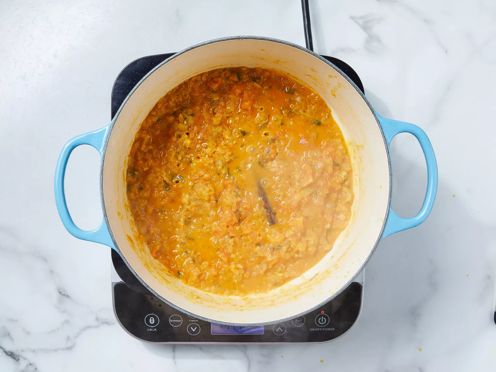
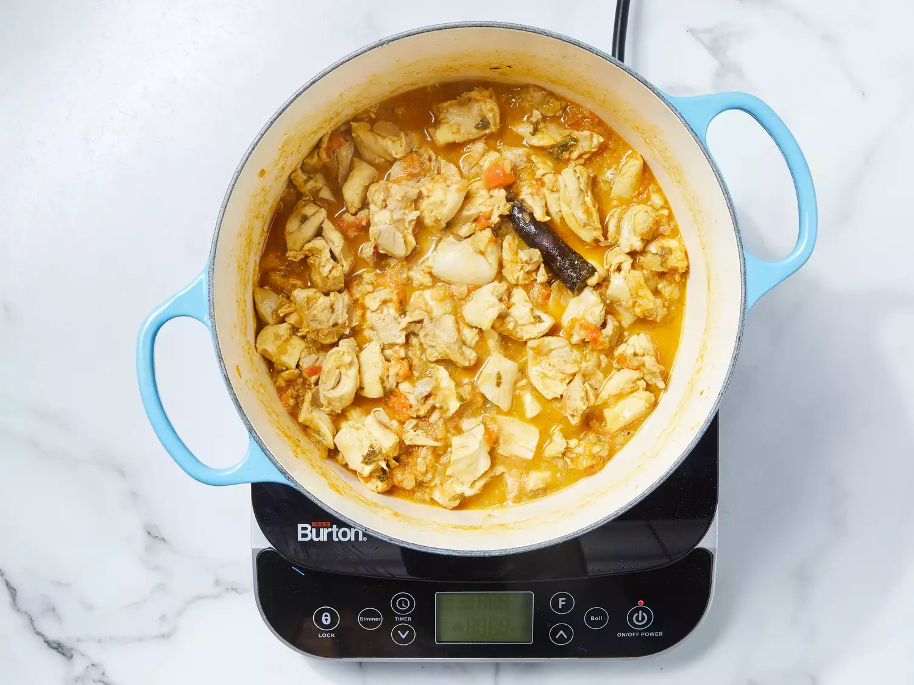
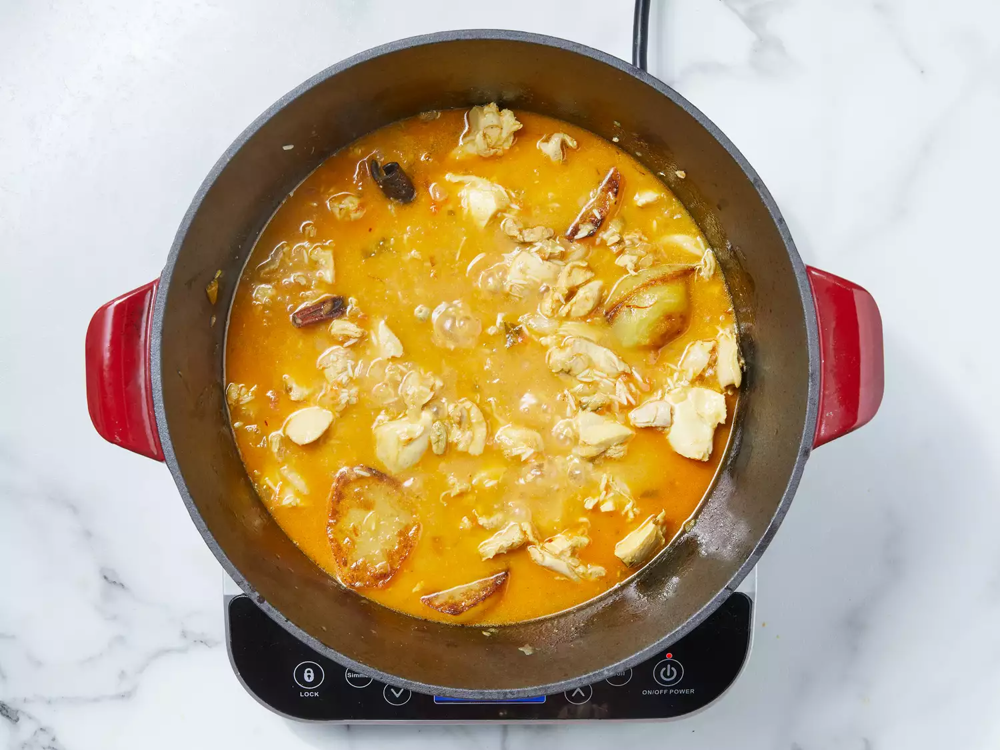

Chicken biryani is a delicious Pakistani/Indian rice dish that's typically reserved for special occasions such as weddings, parties, or holidays such as Ramadan. It has a lengthy preparation, but the work is definitely worth it. For biryani, basmati rice is the ideal variety to use.
Ingredients
4 tablespoons vegetable oil, divided
4 small potatoes, peeled and halved
2 large onions, finely chopped
2 cloves garlic, minced
1 tablespoon minced fresh ginger root
2 medium tomatoes, peeled and chopped
1 teaspoon salt
1 teaspoon ground cumin
½ teaspoon chili powder
½ teaspoon ground black pepper
½ teaspoon ground turmeric
2 tablespoons plain yogurt
2 tablespoons chopped fresh mint leaves
½ teaspoon ground cardamom
1 (2 inch) piece cinnamon stick
3 pounds boneless, skinless chicken pieces cut into chunks
RICE
1 pound basmati rice
2 ½ tablespoons vegetable oil
1 large onion, diced
5 pods cardamom
3 whole cloves
1 (1 inch) piece cinnamon stick
½ teaspoon ground ginger
1 pinch powdered saffron
4 cups chicken stock
1 ½ teaspoons salt
DIRECTIONS:
Step:1
Gather all ingredients.

Step:2
Heat 2 tablespoons of oil in a large skillet. Fry potatoes in hot oil until lightly browned, about 3 to 5 minutes. Remove to a paper towel-lined plate to drain; set aside.

Step:3
Add remaining 2 tablespoons of oil to the skillet. Add onions, garlic, and fresh ginger; cook and stir until onion is soft and golden. Add tomatoes, salt, cumin, chili powder, pepper, and turmeric; cook, stirring constantly, for 5 minutes.

Step:4
Stir in yogurt, mint, ground cardamom, and cinnamon stick. Cover and cook over low heat, stirring occasionally, until tomatoes are cooked to a pulp. It may be necessary to add a little hot water if mixture becomes too dry and starts to stick to the pan.

Step:5
Add chicken and stir well to coat. Cover and cook over very low heat until chicken is tender, 35 to 45 minutes. There should only be a little very thick gravy left when chicken is finished cooking. If necessary cook uncovered for a few minutes to reduce the gravy.

Step:6
Meanwhile, make the rice: Wash rice well and drain in a colander for at least 30 minutes.
Step:7
Heat oil in a large skillet. Add onion; cook and stir until golden. Add cardamom pods, cloves, cinnamon stick, ground ginger, and saffron; stir in rice until coated with spices.
Step:8
Heat stock and salt in a medium pot until hot; pour over rice and stir well.
Step:9
Add chicken mixture and potatoes; stir gently to combine. Bring to a boil.

Step:10
Reduce heat to very low, cover with a tight-fitting lid, and steam for 20 minutes without lifting the lid or stirring.